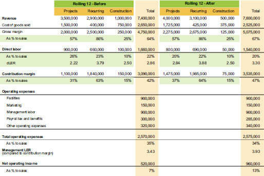

To explain division segments, we will use an example company that performs installation and maintenance of equipment and requires field services labor. This example, showin in table 9.4, segregates activity into projects, recurring maintenance contracts, and new construction projects. Even though they are using the same skill set for each area, the business models are quite different.
The project work produces the most revenue, but you can see the recurring maintenance work yields the best rate of contribution margin. Before this company broke out the activity, they thought their margins were the same for all activities. They were also surprised at how low the margin was on the new construction segment.
Initial division segment summary

To improve performance, they looked at LER by project and determined which projects were below acceptable LER. They determined it was a blend of poor pricing habits and poor execution. After addressing those issues, they were able to bring up contribution margin percentage for projects by 6%, which flowed to the bottom line. Not much improvement was needed on the recurring segment, just to continue growing it and not let margin and LER decline in ways that were preventable. They realized that construction was not a good segment for them if they wanted to aggressively grow, so they assigned a small amount of staff resources to choose only those construction projects that would lead to recurring work or other project work.
To look deeper, let’s now add an analysis of their segment investment to the view in table 9.5. In this scenario, I have shown only trade capital as the investment, since their infrastructure capital would be assumed to be used evenly across all activities and mostly consists of service vehicles.
Division segment summary with ROI analysis
This is where you really see why private equity values companies with recurring revenue. Since there is a service agreement, you are always billing in advance, with only a few slow-paying customers. This is why the recurring AR days outstanding is only 5 days, where it is 45 days for projects and 75 days for construction. There are tactics you can employ to try to lower the days in the other activities, but you are not likely to get either to equal the speed of payment from the recurring work.
Since I am basing the return calculation on a margin number, I chose to express it a multiplier rather than a percentage, but either way will work. It is clear that their project work is far better than their construction work. You can also see the significant improvement in the return on the projects, once they improved the LER from 2.22 to 2.84. That slight increase in labor productivity more than doubled the return on trade capital, from 3.57 to 7.89.
Now that they have optimized each activity, they can be more effective at scaling if the market is there. If scaling requires tradeoff decisions of price or terms, they have the tools to evaluate the impact of both.